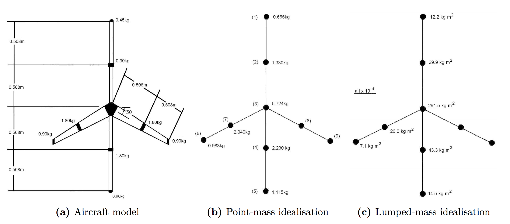

To analyse the vibration modes of a structure, two idealised models have to be created. The simplest model is a combination of point masses, with no rotational inertia, and weightless bars with appropriate bending stiffness. A more sophisticated idealisation is the lumped mass model, thus including rotational inertias. In both cases, the mass and stiffness matrices, $\mathbf{M}$ and $\mathbf{K}$ would be defined, as previously demonstrated.
Performing an eigenvalue analysis of the lumped and point mass models, leads to the eigenvalues and the eigenvectors. This has been outlined in the previous visualisation and led to a theoretical simulation of the nine mode shapes of the model aircraft structure. Given the idealisation in the representation and the assumptions in the theory, it is expected that there is some error in the eigenvector values. The magnitude of the error is of course unknown, hence the experiments with the actual aircraft being still required in the end. In the following part, the measured accelerations can be imported and thus,the experimental eigenvector can be calculated and the mode shape animated and compared to the predicted shape. However, note that there are also errors with experimentation, which implies that the difference between modelling results and experimental results is in general due to a combination of both.